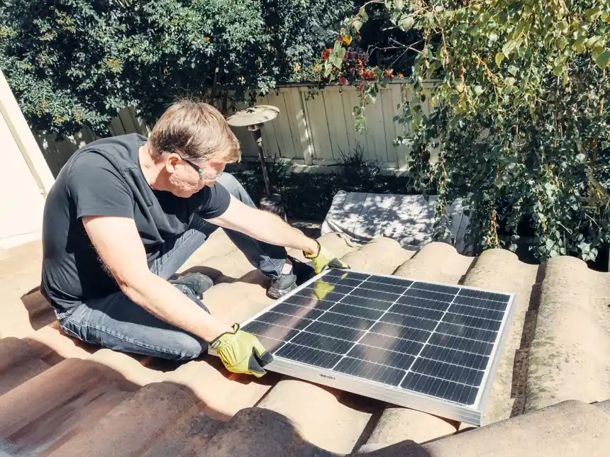

Focused arrival windows
Useful updates and clear arrival timing.

Roof Installation Panama City FL is a crucial service that ensures your home is protected from the elements. Our affordable roof installation in Panama City is designed for homeowners looking to enhance their property's durability and value.
Useful updates and clear arrival timing.
Review the approach and price before deciding.
Equipped vehicles and respectful cleanup.
Neighbors serving neighbors with follow-through.
Our roof installation service covers everything from the initial consultation to the final inspection. We ensure that all aspects of the installation process are handled professionally.
We assess your current roof and discuss your options to ensure the best fit for your home.
We guide you in choosing the best materials for your roof, considering durability and aesthetics.
Our team prepares the site, ensuring all safety measures are in place before installation begins.
We execute the installation using high-quality materials and techniques to ensure a durable roof.
After installation, we conduct a thorough inspection to ensure everything meets our high standards.
Share what is happening and receive a clear next step from the local team.
Roof Installation Panama City FL involves the complete process of removing an old roof and installing a new one, ensuring it meets Florida Building Code compliance. This includes selecting the right materials, such as asphalt shingles or metal sheets, and applying them with precision to guarantee longevity and performance.
Local Panama City customers often need roof installation due to the region's unique climate and weather conditions. The humid subtropical climate can lead to issues like roof leaks and moss growth, making professional installation vital. Our Panama City roof installation services ensure your home is equipped to handle these challenges effectively.

During this step, our team assesses your current roof and discusses options tailored to your needs. This typically takes about an hour.
We help you choose the best materials for your new roof, considering factors like local climate and aesthetic preferences. This process can take a few days.
We secure all necessary permits and prepare the site for installation, ensuring compliance with the Florida Building Code. This step usually takes 1-2 days.
On installation day, our experienced team will remove the old roof and install the new one, typically completing the job within a week, depending on weather conditions.
After installation, we conduct a thorough inspection to ensure everything meets our high standards and the requirements of the Florida Building Code.

Used for securing shingles quickly and effectively, ensuring a strong hold.
Allows for precise cutting of shingles, ensuring a perfect fit during installation.
Essential for driving nails into roofing materials, ensuring durability.
Ensures the safety of our team while working at heights during installation.
We adhere to local building codes, ensuring all installations meet safety and quality standards.
Our installation practices follow NRCA guidelines for best roofing practices, ensuring longevity.
We conduct thorough quality control checks throughout the installation process to ensure excellence.

We assess your roof's condition and recommend a full replacement if necessary. A new roof can enhance your home's value and protect it from future damage.
Our team conducts a thorough inspection and replaces weak areas to prevent further leaks. You can enjoy peace of mind knowing your home is protected from water damage.
We install energy-efficient roofing materials that reflect heat and reduce cooling costs. Lower utility bills and a more comfortable home year-round.
Roof installation in Panama City must consider the local climate and building codes. The humid subtropical climate can lead to issues like roof leaks and moss growth, making quality installation critical. Our team is experienced with local regulations, ensuring compliance with the Florida Building Code. We use materials suited for the climate, such as asphalt shingles or metal roofing, to ensure durability and performance.
Homes here often require durable roofing due to the area's exposure to storms.
Glenwood's older homes benefit from modern roofing materials that enhance energy efficiency.
Beachfront properties need roofs that can withstand saltwater corrosion.
Can lead to moss growth and roof deterioration if not addressed during installation.
Increased wear and tear on roofs, necessitating durable materials and proper installation techniques.
The previous roof had multiple leaks and missing shingles, causing water damage inside the home.
After installation, the new roof features high-quality asphalt shingles, providing a watertight seal and enhancing curb appeal.
Maintenance: Regular inspections and cleaning will keep the roof in top condition.
The old roof contributed to high energy bills due to poor insulation.
The new roof includes energy-efficient materials that reflect heat, reducing cooling costs by 20%.
Maintenance: Ensure proper attic ventilation to maximize energy efficiency.
The roof suffered significant damage from a recent storm, leading to leaks and structural concerns.
The new installation includes reinforced materials designed to withstand severe weather, ensuring safety.
Maintenance: Regularly check for debris and perform seasonal inspections.
Our roof installation service addresses various issues that can arise with aging roofs.
Ignoring leaks can lead to water damage and mold growth, compromising your home's integrity. Our roof installation replaces old materials with durable options, ensuring a watertight seal and preventing leaks.
Missing shingles can expose your roof to further damage from weather elements. We ensure a complete replacement of damaged areas, fortifying your roof against the elements.
Inadequate insulation can lead to higher energy bills and uncomfortable living conditions. Our installation includes proper insulation techniques, enhancing energy efficiency and comfort.
$5,000 - $15,000 depending on scope
Roof installation costs in Panama City typically range from $5,000 to $15,000 in 2026, depending on factors like material choice and roof size. Factors such as the complexity of the installation and local labor costs can impact pricing, but investing in quality roofing ensures long-term savings.
Investing in a quality roof installation not only enhances your home's value but also protects against future repair costs.
The choice between asphalt shingles and metal roofing can significantly affect the overall cost.
Larger roofs require more materials and labor, increasing the total installation cost.
Roofs with multiple slopes or features may require more labor, affecting the price.
Labor rates can vary based on demand and local market conditions, influencing overall pricing.

With over 15 years of experience in roof installation, our team is well-versed in the specific needs of Panama City homeowners. We are NRCA Certified and hold the GAF Master Elite certification, ensuring top-quality workmanship.
The roof installation process involves an initial consultation, material selection, securing permits, installation, and a final inspection. This typically spans over several days.
Most roof installations in Panama City take about one week, depending on the size of the roof and weather conditions.
We recommend materials like asphalt shingles and metal sheets for their durability and effectiveness against Panama City's weather conditions.
Typical 2026 pricing for roof installation in Panama City ranges from $5,000 to $15,000, depending on materials and roof size.
Not seeing your question? Our local team can help you understand urgency, scheduling and what to expect.
Ask the local team
Our roof replacement services ensure that old, damaged roofs are replaced with new, durable materials, enhancing your home's value.
View service
We offer comprehensive roof repair services to fix leaks and other issues, ensuring the longevity of your roof.
View service
Regular roof inspections help identify potential issues before they become major problems, safeguarding your investment.
View service
Our roof maintenance plans help prolong the life of your roof and prevent costly repairs down the line.
View service
We invite you to reach out for any roofing needs. Our team is available to assist you promptly, ensuring a quick response.